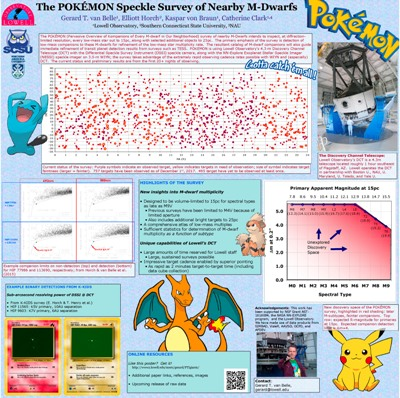

The POKÉMON Speckle Survey of Nearby M-Dwarfs
Gerard T. van Belle1, Elliott Horch1,3, Kaspar von Braun1, Catherine Clark1,2
1Lowell Observatory, Flagstaff AZ; 2Northern Arizona University, Flagstaff AZ; 3Southern Connecticut State University
AAS231
Washington, DC
January 8-12, 2018

Full-size JPG
PDF
Links of interest
Lead author: Gerard van Belle
Institutions: